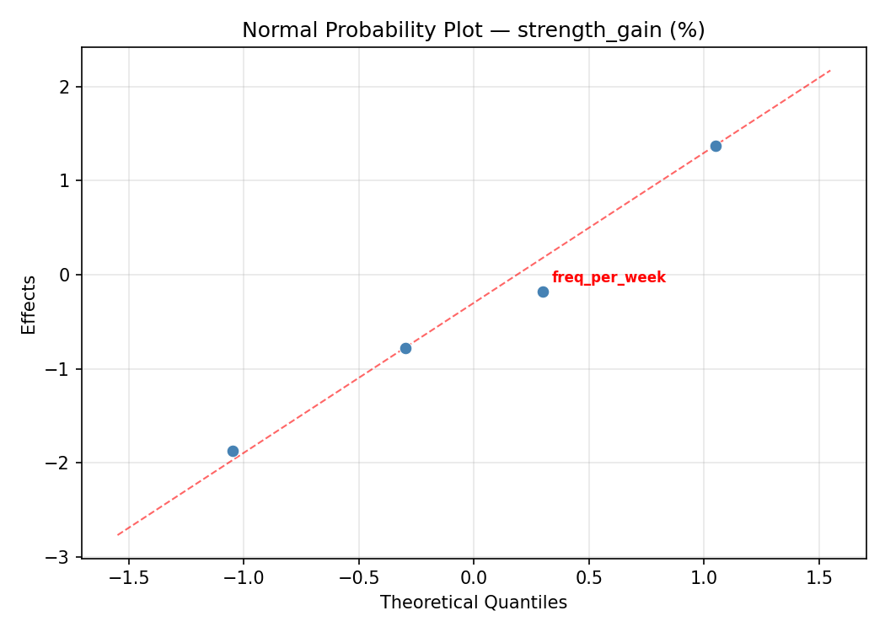
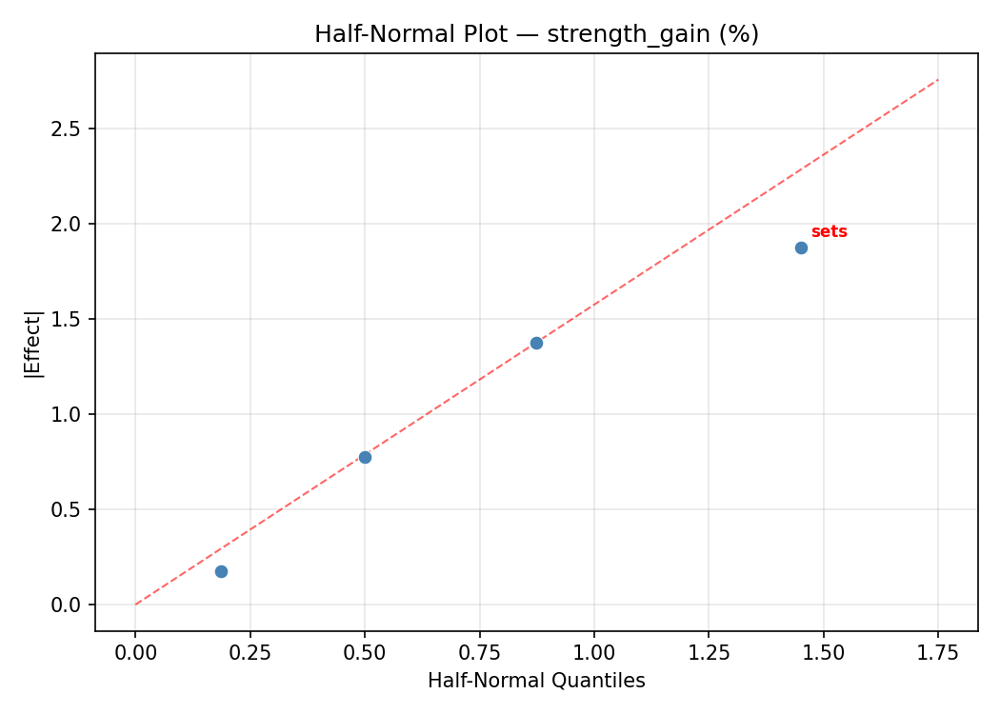
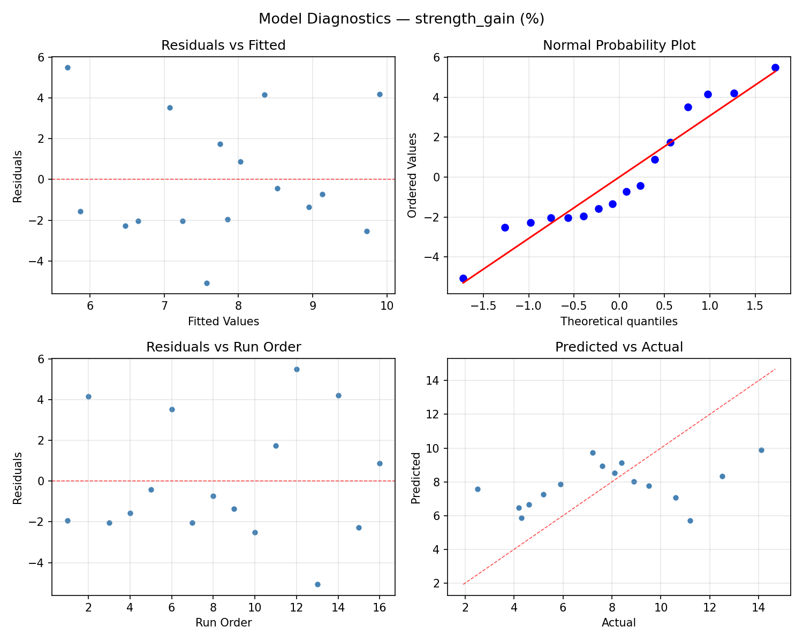
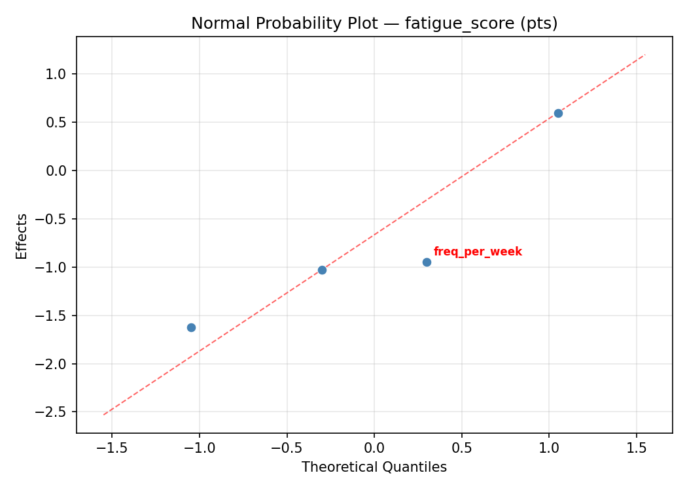
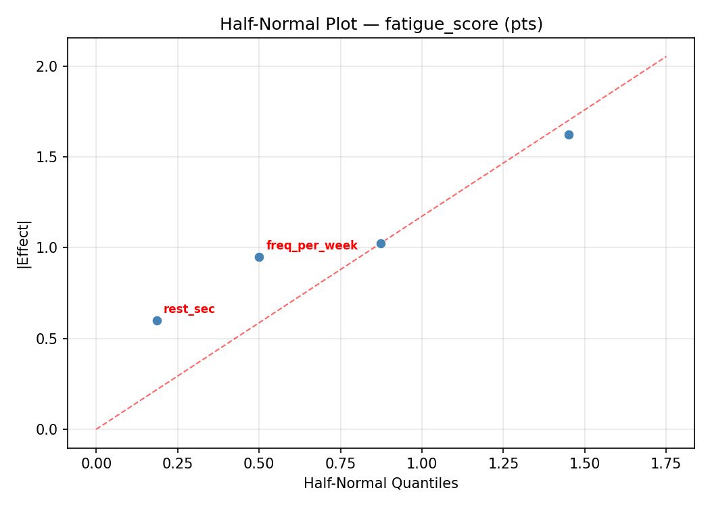
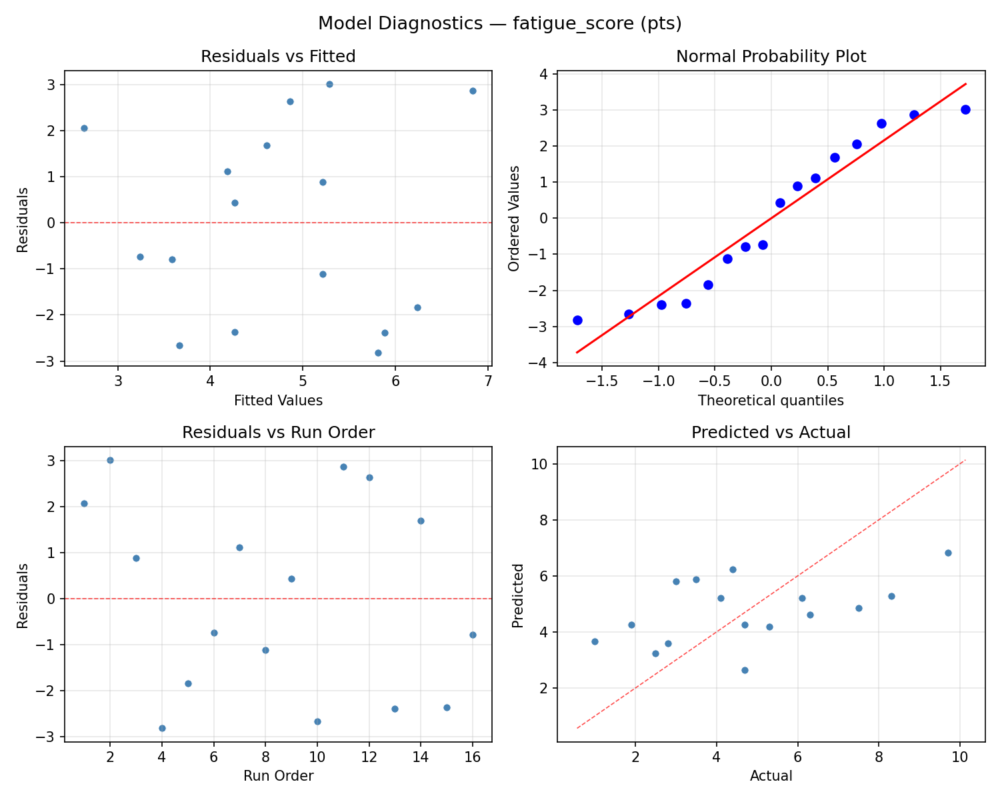

Summary
This experiment investigates strength training program. Full factorial of sets, reps, rest period, and training frequency to maximize strength gain and minimize fatigue score.
The design varies 4 factors: sets (sets), ranging from 3 to 6, reps (reps), ranging from 3 to 12, rest sec (sec), ranging from 60 to 180, and freq per week (days/wk), ranging from 2 to 5. The goal is to optimize 2 responses: strength gain (%) (maximize) and fatigue score (pts) (minimize). Fixed conditions held constant across all runs include exercise = barbell_squat, trainee level = intermediate.
A full factorial design was used to explore all 16 possible combinations of the 4 factors at two levels. This guarantees that every main effect and interaction can be estimated independently, at the cost of a larger experiment (16 runs).
Quadratic response surface models were fitted to capture potential curvature and factor interactions. The RSM contour plots below visualize how pairs of factors jointly affect each response.
Key Findings
For strength gain, the most influential factors were reps (38.2%), sets (32.4%), freq per week (27.1%). The best observed value was 14.1 (at sets = 6, reps = 3, rest sec = 60).
For fatigue score, the most influential factors were rest sec (40.4%), freq per week (29.8%), sets (15.9%). The best observed value was 1.0 (at sets = 3, reps = 3, rest sec = 60).
Recommended Next Steps
- Consider whether any fixed factors should be varied in a future study.
Experimental Setup
Factors
| Factor | Low | High | Unit |
|---|
sets | 3 | 6 | sets |
reps | 3 | 12 | reps |
rest_sec | 60 | 180 | sec |
freq_per_week | 2 | 5 | days/wk |
Fixed: exercise = barbell_squat, trainee_level = intermediate
Responses
| Response | Direction | Unit |
|---|
strength_gain | ↑ maximize | % |
fatigue_score | ↓ minimize | pts |
Configuration
{
"metadata": {
"name": "Strength Training Program",
"description": "Full factorial of sets, reps, rest period, and training frequency to maximize strength gain and minimize fatigue score"
},
"factors": [
{
"name": "sets",
"levels": [
"3",
"6"
],
"type": "continuous",
"unit": "sets"
},
{
"name": "reps",
"levels": [
"3",
"12"
],
"type": "continuous",
"unit": "reps"
},
{
"name": "rest_sec",
"levels": [
"60",
"180"
],
"type": "continuous",
"unit": "sec"
},
{
"name": "freq_per_week",
"levels": [
"2",
"5"
],
"type": "continuous",
"unit": "days/wk"
}
],
"fixed_factors": {
"exercise": "barbell_squat",
"trainee_level": "intermediate"
},
"responses": [
{
"name": "strength_gain",
"optimize": "maximize",
"unit": "%"
},
{
"name": "fatigue_score",
"optimize": "minimize",
"unit": "pts"
}
],
"settings": {
"operation": "full_factorial",
"test_script": "use_cases/109_strength_training/sim.sh"
}
}
Experimental Matrix
The Full Factorial Design produces 16 runs. Each row is one experiment with specific factor settings.
| Run | sets | reps | rest_sec | freq_per_week |
|---|
| 1 | 3 | 12 | 180 | 5 |
| 2 | 6 | 3 | 60 | 5 |
| 3 | 3 | 12 | 60 | 5 |
| 4 | 3 | 12 | 180 | 2 |
| 5 | 6 | 12 | 180 | 2 |
| 6 | 6 | 3 | 180 | 2 |
| 7 | 6 | 12 | 60 | 2 |
| 8 | 6 | 3 | 60 | 2 |
| 9 | 3 | 3 | 60 | 5 |
| 10 | 3 | 3 | 180 | 2 |
| 11 | 6 | 12 | 60 | 5 |
| 12 | 6 | 12 | 180 | 5 |
| 13 | 3 | 12 | 60 | 2 |
| 14 | 6 | 3 | 180 | 5 |
| 15 | 3 | 3 | 60 | 2 |
| 16 | 3 | 3 | 180 | 5 |
Step-by-Step Workflow
1
Preview the design
$ python doe.py info --config use_cases/109_strength_training/config.json
2
Generate the runner script
$ python doe.py generate --config use_cases/109_strength_training/config.json \
--output use_cases/109_strength_training/results/run.sh --seed 42
3
Execute the experiments
$ bash use_cases/109_strength_training/results/run.sh
4
Analyze results
$ python doe.py analyze --config use_cases/109_strength_training/config.json
5
Get optimization recommendations
$ python doe.py optimize --config use_cases/109_strength_training/config.json
6
Multi-objective optimization
With 2 competing responses, use --multi to find the best compromise via Derringer–Suich desirability.
$ python doe.py optimize --config use_cases/109_strength_training/config.json --multi
7
Generate the HTML report
$ python doe.py report --config use_cases/109_strength_training/config.json \
--output use_cases/109_strength_training/results/report.html
Features Exercised
| Feature | Value |
|---|
| Design type | full_factorial |
| Factor types | continuous (all 4) |
| Arg style | double-dash |
| Responses | 2 (strength_gain ↑, fatigue_score ↓) |
| Total runs | 16 |
Analysis Results
Generated from actual experiment runs using the DOE Helper Tool.
Response: strength_gain
Top factors: reps (38.2%), sets (32.4%), freq_per_week (27.1%).
ANOVA
| Source | DF | SS | MS | F | p-value |
|---|
| Source | DF | SS | MS | F | p-value |
| sets | 1 | 13.3225 | 13.3225 | 2.044 | 0.2122 |
| reps | 1 | 18.4900 | 18.4900 | 2.836 | 0.1530 |
| rest_sec | 1 | 0.0625 | 0.0625 | 0.010 | 0.9258 |
| freq_per_week | 1 | 9.3025 | 9.3025 | 1.427 | 0.2858 |
| sets*reps | 1 | 27.5625 | 27.5625 | 4.228 | 0.0949 |
| sets*rest_sec | 1 | 0.0900 | 0.0900 | 0.014 | 0.9110 |
| sets*freq_per_week | 1 | 12.9600 | 12.9600 | 1.988 | 0.2176 |
| reps*rest_sec | 1 | 21.6225 | 21.6225 | 3.317 | 0.1282 |
| reps*freq_per_week | 1 | 0.0225 | 0.0225 | 0.003 | 0.9554 |
| rest_sec*freq_per_week | 1 | 24.0100 | 24.0100 | 3.683 | 0.1131 |
| Error | 5 | 32.5950 | 6.5190 | | |
| Total | 15 | 160.0400 | 10.6693 | | |
Pareto Chart

Main Effects Plot

Normal Probability Plot of Effects

Half-Normal Plot of Effects

Model Diagnostics

Response: fatigue_score
Top factors: rest_sec (40.4%), freq_per_week (29.8%), sets (15.9%).
ANOVA
| Source | DF | SS | MS | F | p-value |
|---|
| Source | DF | SS | MS | F | p-value |
| sets | 1 | 2.7225 | 2.7225 | 0.632 | 0.4628 |
| reps | 1 | 2.1025 | 2.1025 | 0.488 | 0.5160 |
| rest_sec | 1 | 17.6400 | 17.6400 | 4.093 | 0.0990 |
| freq_per_week | 1 | 9.6100 | 9.6100 | 2.230 | 0.1956 |
| sets*reps | 1 | 0.4225 | 0.4225 | 0.098 | 0.7668 |
| sets*rest_sec | 1 | 1.2100 | 1.2100 | 0.281 | 0.6189 |
| sets*freq_per_week | 1 | 8.4100 | 8.4100 | 1.952 | 0.2213 |
| reps*rest_sec | 1 | 7.2900 | 7.2900 | 1.692 | 0.2501 |
| reps*freq_per_week | 1 | 3.2400 | 3.2400 | 0.752 | 0.4255 |
| rest_sec*freq_per_week | 1 | 11.2225 | 11.2225 | 2.604 | 0.1675 |
| Error | 5 | 21.5475 | 4.3095 | | |
| Total | 15 | 85.4175 | 5.6945 | | |
Pareto Chart

Main Effects Plot

Normal Probability Plot of Effects

Half-Normal Plot of Effects

Model Diagnostics

Response Surface Plots
3D surfaces fitted with quadratic RSM. Red dots are observed data points.
fatigue score reps vs freq per week

fatigue score reps vs rest sec

fatigue score rest sec vs freq per week

fatigue score sets vs freq per week

fatigue score sets vs reps

fatigue score sets vs rest sec

strength gain reps vs freq per week

strength gain reps vs rest sec

strength gain rest sec vs freq per week

strength gain sets vs freq per week

strength gain sets vs reps

strength gain sets vs rest sec

Multi-Objective Optimization
When responses compete, Derringer–Suich desirability finds the best compromise.
Each response is scaled to a 0–1 desirability, then combined via a weighted geometric mean.
Overall Desirability
D = 0.7250
Per-Response Desirability
| Response | Weight | Desirability | Predicted | Dir |
|---|
strength_gain |
1.5 |
|
10.60 0.6803 10.60 % |
↑ |
fatigue_score |
1.0 |
|
2.50 0.7978 2.50 pts |
↓ |
Recommended Settings
| Factor | Value |
|---|
sets | 3 sets |
reps | 3 reps |
rest_sec | 60 sec |
freq_per_week | 5 days/wk |
Source: from observed run #6
Trade-off Summary
Sacrifice = how much worse than single-objective best.
| Response | Predicted | Best Observed | Sacrifice |
|---|
fatigue_score | 2.50 | 1.00 | +1.50 |
Top 3 Runs by Desirability
| Run | D | Factor Settings |
|---|
| #14 | 0.6746 | sets=6, reps=3, rest_sec=180, freq_per_week=2 |
| #16 | 0.6260 | sets=3, reps=12, rest_sec=60, freq_per_week=5 |
Model Quality
| Response | R² | Type |
|---|
fatigue_score | 0.2121 | linear |
Full Multi-Objective Output
============================================================
MULTI-OBJECTIVE OPTIMIZATION
Method: Derringer-Suich Desirability Function
============================================================
Overall desirability: D = 0.7250
Response Weight Desirability Predicted Direction
---------------------------------------------------------------------
strength_gain 1.5 0.6803 10.60 % ↑
fatigue_score 1.0 0.7978 2.50 pts ↓
Recommended settings:
sets = 3 sets
reps = 3 reps
rest_sec = 60 sec
freq_per_week = 5 days/wk
(from observed run #6)
Trade-off summary:
strength_gain: 10.60 (best observed: 14.10, sacrifice: +3.50)
fatigue_score: 2.50 (best observed: 1.00, sacrifice: +1.50)
Model quality:
strength_gain: R² = 0.3361 (linear)
fatigue_score: R² = 0.2121 (linear)
Top 3 observed runs by overall desirability:
1. Run #6 (D=0.7250): sets=3, reps=3, rest_sec=60, freq_per_week=5
2. Run #14 (D=0.6746): sets=6, reps=3, rest_sec=180, freq_per_week=2
3. Run #16 (D=0.6260): sets=3, reps=12, rest_sec=60, freq_per_week=5
Full Analysis Output
=== Main Effects: strength_gain ===
Factor Effect Std Error % Contribution
--------------------------------------------------------------
reps 2.1500 0.8166 38.2%
sets -1.8250 0.8166 32.4%
freq_per_week -1.5250 0.8166 27.1%
rest_sec 0.1250 0.8166 2.2%
=== ANOVA Table: strength_gain ===
Source DF SS MS F p-value
-----------------------------------------------------------------------------
sets 1 13.3225 13.3225 2.044 0.2122
reps 1 18.4900 18.4900 2.836 0.1530
rest_sec 1 0.0625 0.0625 0.010 0.9258
freq_per_week 1 9.3025 9.3025 1.427 0.2858
sets*reps 1 27.5625 27.5625 4.228 0.0949
sets*rest_sec 1 0.0900 0.0900 0.014 0.9110
sets*freq_per_week 1 12.9600 12.9600 1.988 0.2176
reps*rest_sec 1 21.6225 21.6225 3.317 0.1282
reps*freq_per_week 1 0.0225 0.0225 0.003 0.9554
rest_sec*freq_per_week 1 24.0100 24.0100 3.683 0.1131
Error 5 32.5950 6.5190
Total 15 160.0400 10.6693
=== Interaction Effects: strength_gain ===
Factor A Factor B Interaction % Contribution
------------------------------------------------------------------------
sets reps -2.6250 27.9%
rest_sec freq_per_week -2.4500 26.0%
reps rest_sec 2.3250 24.7%
sets freq_per_week -1.8000 19.1%
sets rest_sec -0.1500 1.6%
reps freq_per_week 0.0750 0.8%
=== Summary Statistics: strength_gain ===
sets:
Level N Mean Std Min Max
------------------------------------------------------------
3 8 8.7125 3.5248 4.2000 14.1000
6 8 6.8875 2.9216 2.5000 11.2000
reps:
Level N Mean Std Min Max
------------------------------------------------------------
12 8 6.7250 2.9001 2.5000 11.2000
3 8 8.8750 3.4367 4.3000 14.1000
rest_sec:
Level N Mean Std Min Max
------------------------------------------------------------
180 8 7.7375 1.7004 5.2000 10.6000
60 8 7.8625 4.4680 2.5000 14.1000
freq_per_week:
Level N Mean Std Min Max
------------------------------------------------------------
2 8 8.5625 3.0260 4.6000 14.1000
5 8 7.0375 3.5181 2.5000 12.5000
=== Main Effects: fatigue_score ===
Factor Effect Std Error % Contribution
--------------------------------------------------------------
rest_sec 2.1000 0.5966 40.4%
freq_per_week -1.5500 0.5966 29.8%
sets 0.8250 0.5966 15.9%
reps 0.7250 0.5966 13.9%
=== ANOVA Table: fatigue_score ===
Source DF SS MS F p-value
-----------------------------------------------------------------------------
sets 1 2.7225 2.7225 0.632 0.4628
reps 1 2.1025 2.1025 0.488 0.5160
rest_sec 1 17.6400 17.6400 4.093 0.0990
freq_per_week 1 9.6100 9.6100 2.230 0.1956
sets*reps 1 0.4225 0.4225 0.098 0.7668
sets*rest_sec 1 1.2100 1.2100 0.281 0.6189
sets*freq_per_week 1 8.4100 8.4100 1.952 0.2213
reps*rest_sec 1 7.2900 7.2900 1.692 0.2501
reps*freq_per_week 1 3.2400 3.2400 0.752 0.4255
rest_sec*freq_per_week 1 11.2225 11.2225 2.604 0.1675
Error 5 21.5475 4.3095
Total 15 85.4175 5.6945
=== Interaction Effects: fatigue_score ===
Factor A Factor B Interaction % Contribution
------------------------------------------------------------------------
rest_sec freq_per_week -1.6750 26.8%
sets freq_per_week -1.4500 23.2%
reps rest_sec 1.3500 21.6%
reps freq_per_week 0.9000 14.4%
sets rest_sec -0.5500 8.8%
sets reps 0.3250 5.2%
=== Summary Statistics: fatigue_score ===
sets:
Level N Mean Std Min Max
------------------------------------------------------------
3 8 4.3250 2.4835 1.0000 8.3000
6 8 5.1500 2.3761 2.8000 9.7000
reps:
Level N Mean Std Min Max
------------------------------------------------------------
12 8 4.3750 1.7847 1.9000 7.5000
3 8 5.1000 2.9525 1.0000 9.7000
rest_sec:
Level N Mean Std Min Max
------------------------------------------------------------
180 8 3.6875 1.4515 1.0000 5.3000
60 8 5.7875 2.7524 1.9000 9.7000
freq_per_week:
Level N Mean Std Min Max
------------------------------------------------------------
2 8 5.5125 2.5671 1.0000 9.7000
5 8 3.9625 2.0591 1.9000 8.3000
Optimization Recommendations
=== Optimization: strength_gain ===
Direction: maximize
Best observed run: #14
sets = 6
reps = 3
rest_sec = 60
freq_per_week = 2
Value: 14.1
RSM Model (linear, R² = 0.5132, Adj R² = 0.3361):
Coefficients:
intercept +7.8000
sets +1.2375
reps -0.4250
rest_sec -1.7875
freq_per_week -0.4750
RSM Model (quadratic, R² = 0.7900, Adj R² = -2.1497):
Coefficients:
intercept +1.5600
sets +1.2375
reps -0.4250
rest_sec -1.7875
freq_per_week -0.4750
sets*reps -0.6125
sets*rest_sec +0.0250
sets*freq_per_week -0.8125
reps*rest_sec +0.1375
reps*freq_per_week +1.2250
rest_sec*freq_per_week -0.4625
sets^2 +1.5600
reps^2 +1.5600
rest_sec^2 +1.5600
freq_per_week^2 +1.5600
Curvature analysis:
sets coef=+1.5600 convex (has a minimum)
reps coef=+1.5600 convex (has a minimum)
rest_sec coef=+1.5600 convex (has a minimum)
freq_per_week coef=+1.5600 convex (has a minimum)
Notable interactions:
reps*freq_per_week coef=+1.2250 (synergistic)
sets*freq_per_week coef=-0.8125 (antagonistic)
sets*reps coef=-0.6125 (antagonistic)
rest_sec*freq_per_week coef=-0.4625 (antagonistic)
Predicted optimum (from linear model, at observed points):
sets = 6
reps = 3
rest_sec = 60
freq_per_week = 2
Predicted value: 11.7250
Surface optimum (via L-BFGS-B, linear model):
sets = 6
reps = 3
rest_sec = 60
freq_per_week = 2
Predicted value: 11.7250
Model quality: Moderate fit — use predictions directionally, not precisely.
Factor importance:
1. rest_sec (effect: 3.6, contribution: 45.5%)
2. sets (effect: 2.5, contribution: 31.5%)
3. freq_per_week (effect: -1.0, contribution: 12.1%)
4. reps (effect: 0.8, contribution: 10.8%)
=== Optimization: fatigue_score ===
Direction: minimize
Best observed run: #10
sets = 3
reps = 3
rest_sec = 60
freq_per_week = 2
Value: 1.0
RSM Model (linear, R² = 0.3339, Adj R² = 0.0917):
Coefficients:
intercept +4.7375
sets +1.2000
reps -0.1000
rest_sec -0.2875
freq_per_week -0.5000
RSM Model (quadratic, R² = 0.6520, Adj R² = -4.2204):
Coefficients:
intercept +0.9475
sets +1.2000
reps -0.1000
rest_sec -0.2875
freq_per_week -0.5000
sets*reps -0.3625
sets*rest_sec -0.6750
sets*freq_per_week -0.9625
reps*rest_sec -0.3250
reps*freq_per_week -0.2625
rest_sec*freq_per_week -0.1000
sets^2 +0.9475
reps^2 +0.9475
rest_sec^2 +0.9475
freq_per_week^2 +0.9475
Curvature analysis:
reps coef=+0.9475 convex (has a minimum)
sets coef=+0.9475 convex (has a minimum)
rest_sec coef=+0.9475 convex (has a minimum)
freq_per_week coef=+0.9475 convex (has a minimum)
Notable interactions:
sets*freq_per_week coef=-0.9625 (antagonistic)
sets*rest_sec coef=-0.6750 (antagonistic)
sets*reps coef=-0.3625 (antagonistic)
reps*rest_sec coef=-0.3250 (antagonistic)
Predicted optimum (from linear model, at observed points):
sets = 6
reps = 3
rest_sec = 60
freq_per_week = 2
Predicted value: 6.8250
Surface optimum (via L-BFGS-B, linear model):
sets = 3
reps = 12
rest_sec = 180
freq_per_week = 5
Predicted value: 2.6500
Model quality: Weak fit — consider adding center points or using a different design.
Factor importance:
1. sets (effect: 2.4, contribution: 57.5%)
2. freq_per_week (effect: -1.0, contribution: 24.0%)
3. rest_sec (effect: 0.6, contribution: 13.8%)
4. reps (effect: 0.2, contribution: 4.8%)